Top 25 Albums of 2019
25. Julia Jacklin: Crushing
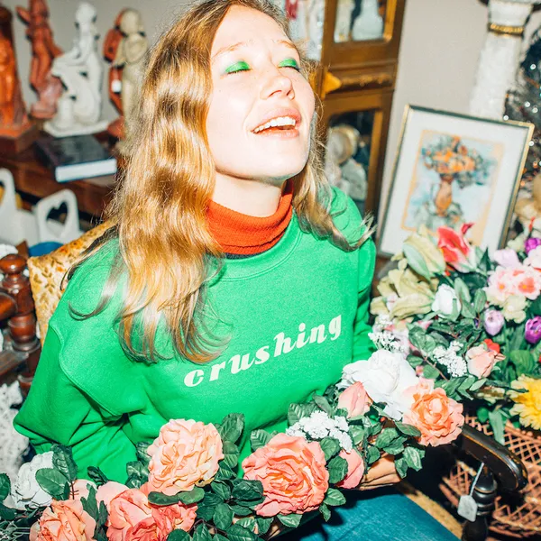
24. Billie Eilish: WHEN WE ALL FALL ASLEEP, WHERE DO WE GO?

23. Barrie: Happy to Be Here:
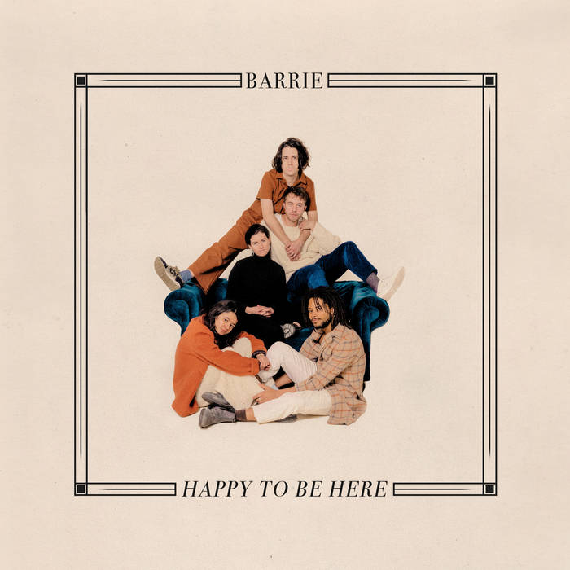
22. Stella Donnelly: Beware of the Dogs
21. Urochromes: Trope House

20. Nilüfer Yanya: Miss Universe
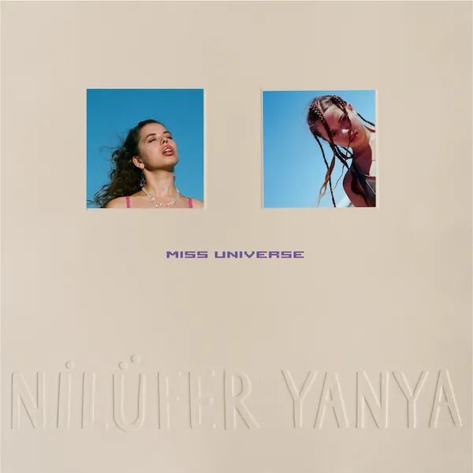
19. Little Simz: GREY Area
18. Stef Chura: Midnight
17. Andrew Bird: My Finest Work Yet

16. Arthur Moon: Arthur Moon
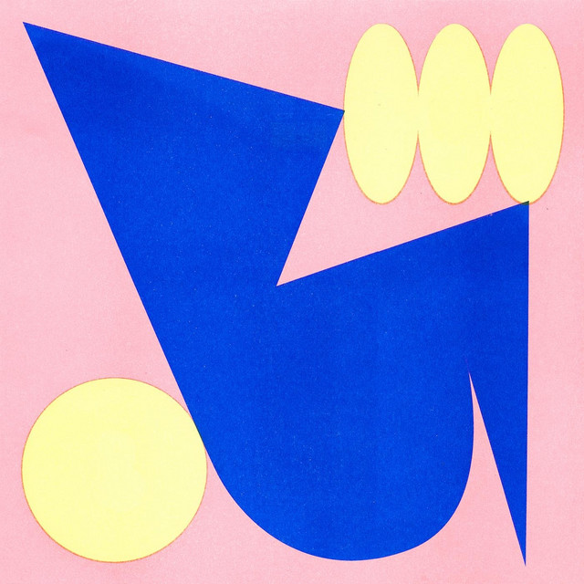
15. Psychedelic Porn Crumpets: And Now for the Whatchamacallit

14. Anderson Paak: Ventura
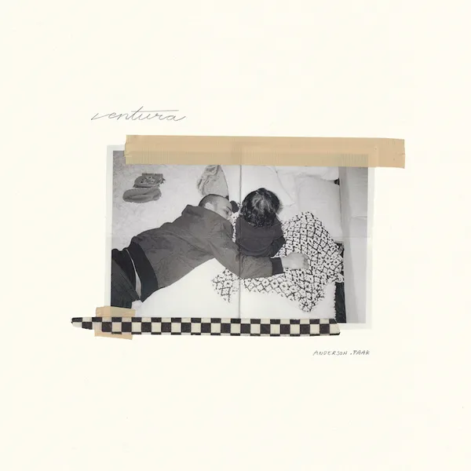
13. Lillie Mae: Other Girls
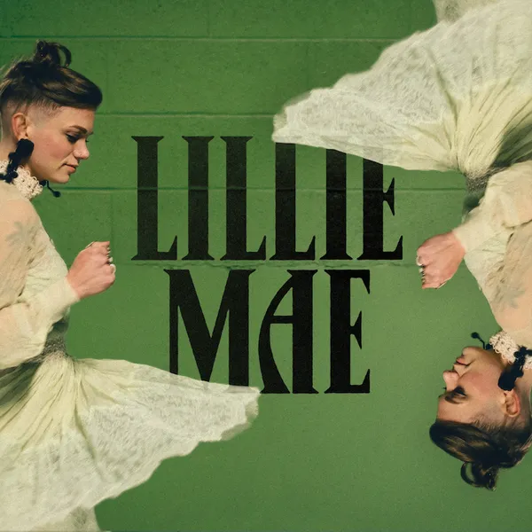
12. Brittany Howard: Jaime
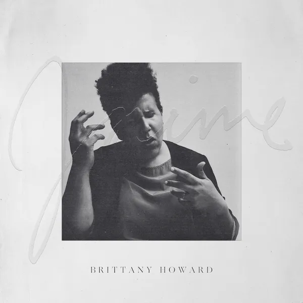
11. James Blake: Assume Form
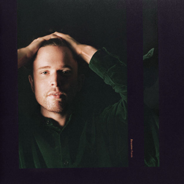
10. Michael Kiwanuka: KIWANUKA
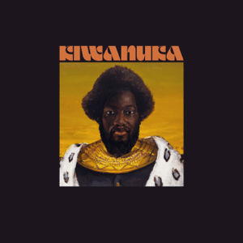
9. Weyes Blood: Titanic Rising

8. Tiny Ruins: Olympic Girls

7. Big Thief: Two Hands
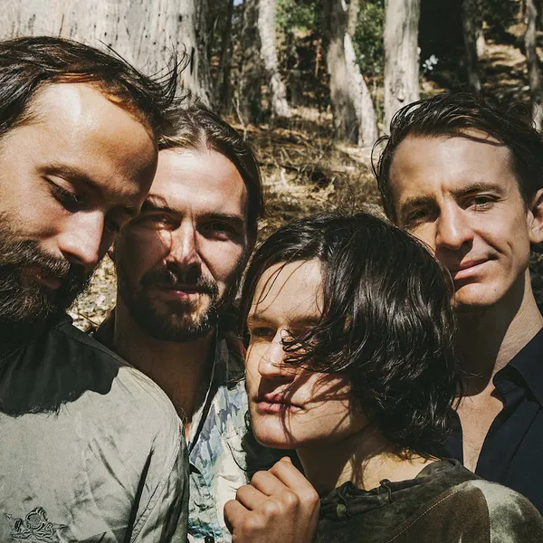
6. Pup: Morbid Stuff
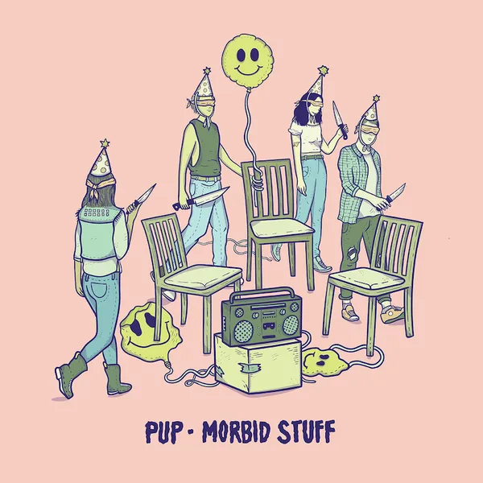
5. Wilco: Ode to Joy
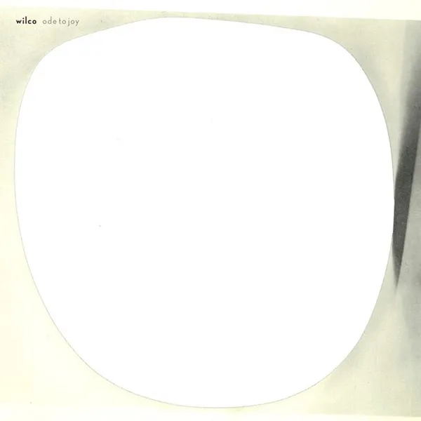
4. Bon Iver: i,i

3. Big Thief: U.F.O.F.
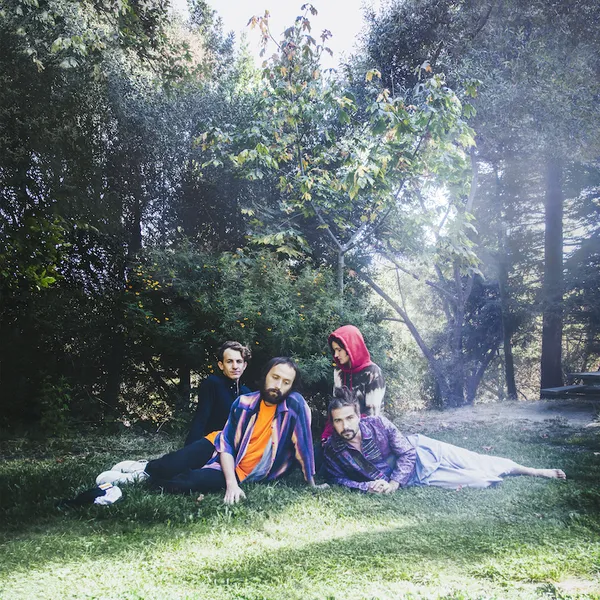
2. Alex G: House of Sugar
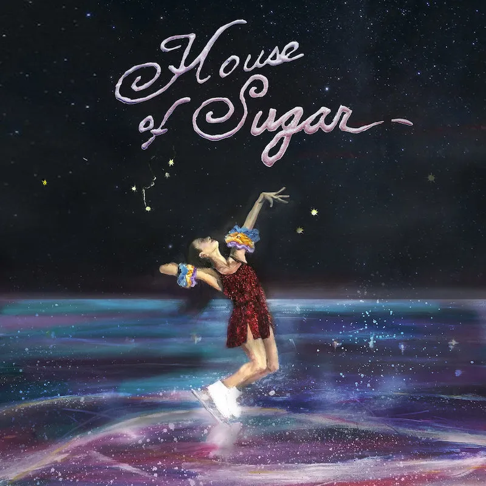
1. Angel Olsen: All Mirrors